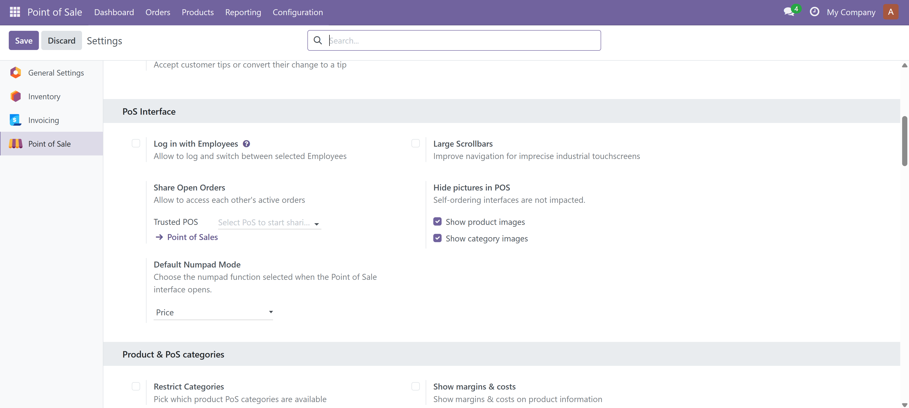
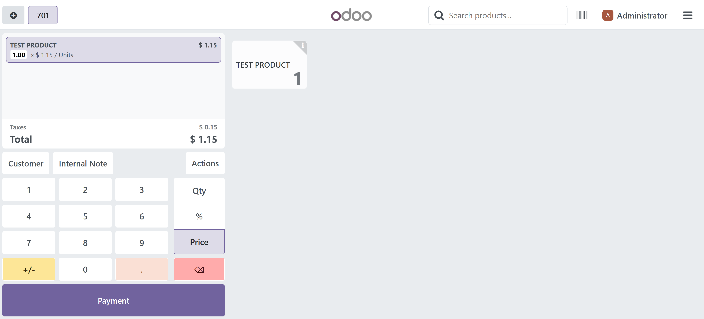

Choose how your POS numpad starts.
Free • Odoo 18 Community • LGPL-3
Odoo normally starts the POS numpad in Quantity mode. This addon lets each Point of Sale configuration choose its preferred initial mode.
Start with the standard quantity-editing behavior.
Start ready to edit the selected order line price.
Start ready to enter a line discount when enabled.
Different Point of Sale configurations can use different defaults. Changing one POS does not affect another.
The selected mode is applied only initially. Cashiers can continue switching normally between Quantity, Price, and Discount afterward. The addon does not replace or lock the native numpad.
Point of Sale → Configuration → Settings → Default Numpad Mode

Choose the default numpad mode from POS settings.

POS starts directly in Price mode when configured.
Odoo 18.0 Community Edition tested. Suitable for self-hosted Odoo and Odoo.sh environments where custom Python addons are supported.
Requires only point_of_sale. No external Python libraries or external services are required.
Free software distributed under LGPL-3.